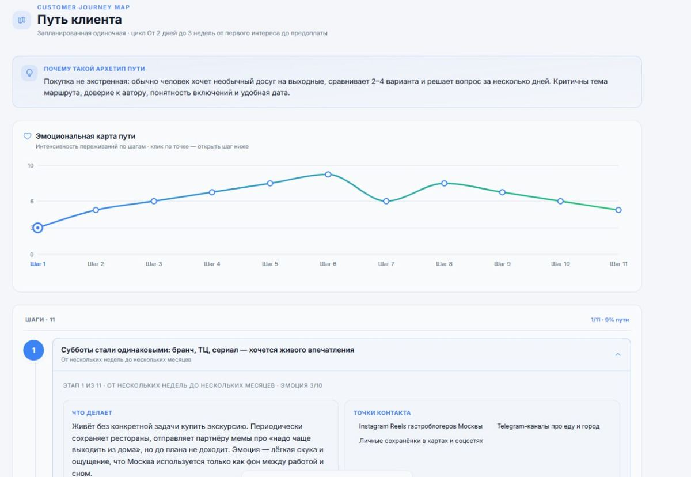
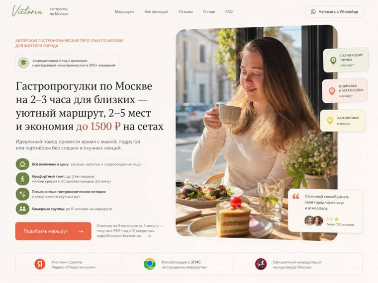
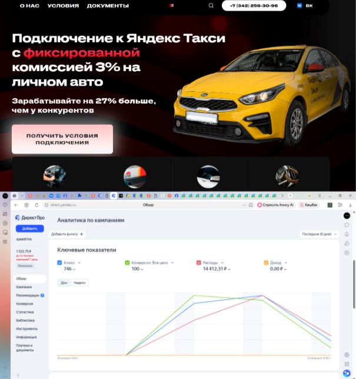
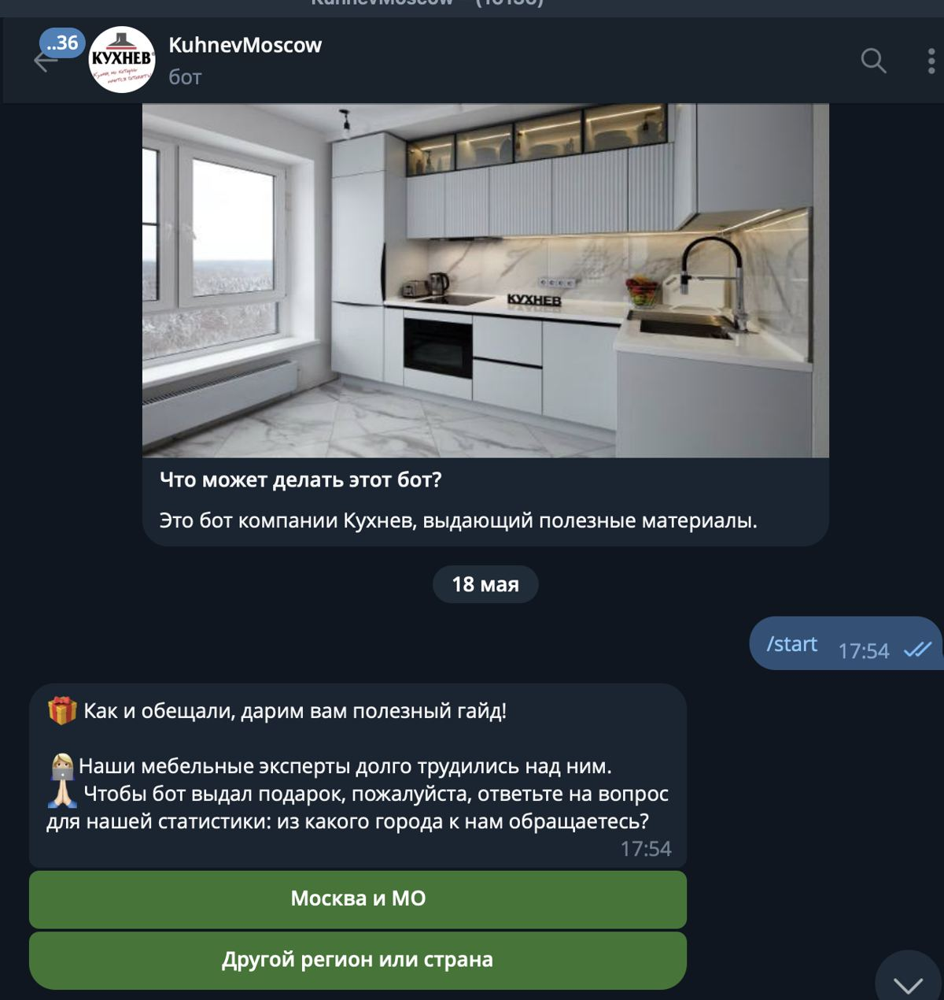
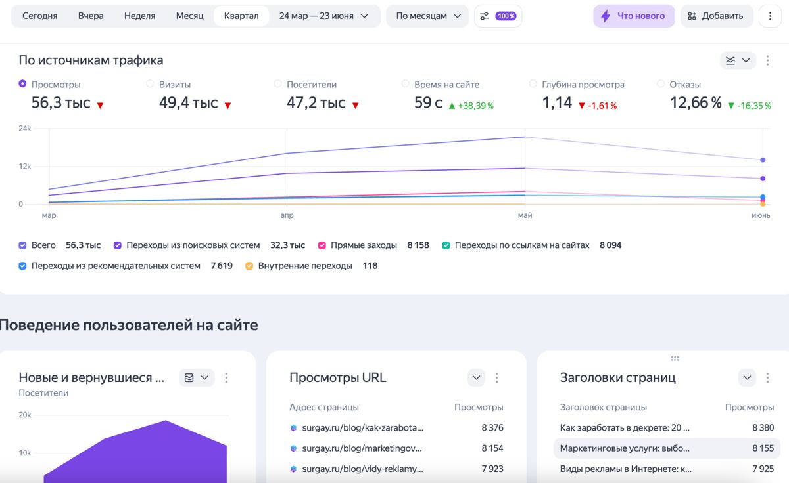

Соберём понятную маркетинговую систему из Квиз-лендинг + Яндекс Директ + Авито + Догревающий чат-бот + Аналитика, чтобы получать стабильный и управляемый поток заявок на бани-бочки с понятной стоимостью обращения, чтобы отделу продаж было с чем работать каждый день без хаоса, догадок и лишних согласований.
Все цифры ниже — прогнозная модель при заданных вводных (бюджет, ниша, регион), а не гарантия результата. Итоговые продажи зависят в том числе от работы вашего отдела продаж.
Сначала фиксируем текущую ситуацию и целевой результат, чтобы считать запуск не в кликах, а в заявках, замерах и продажах.
| Заявки / лиды | 20 |
|---|---|
| Продажи / договоры | 2 |
| Средний чек | 180 000 ₽ |
| Текущая выручка | 360 000 ₽ |
Сейчас поток обращений нестабилен: заявки приходят от случая к случаю, нет прозрачной цены заявки и понимания, какие каналы реально приносят клиентов. Из-за этого продажи проседают, а рекламный бюджет расходуется без чёткой картины эффективности.
| План заявок | 164 |
|---|---|
| План продаж | 11 |
| Средний чек | 180 000 ₽ |
| Целевая выручка | 1 400 000 ₽ |
Настроенная система привлечения: квиз-страница принимает трафик, реклама в Яндекс Директ и объявления на Авито дают ежедневные обращения, чат-бот догревает заявки, а аналитика показывает цену заявки и вклад каждого канала. Ориентир — стабильный поток обращений и прозрачная картина эффективности вложений.
Мало входящих обращений и нет стабильного управляемого потока; непонятно, во сколько обходится заявка и окупается ли реклама; сомнение, что маркетинг сработает именно для этой компании; опыт неудачных запусков с фрилансерами и подрядчиками без специализации; страх слить бюджет на нецелевые лиды; маркетинг откладывается из-за других расходов и кажущейся несрочности.
Показываем, из каких элементов собирается система заявок: трафик, посадочная страница, воронка, аналитика и контроль обработки.
Понимаем, как клиенты ищут услугу и с кем сравнивают вас, — и на этой основе собираем оффер, который отвечает на их вопросы.

Вы получаете карту спроса и конкурентов под продажи бань-бочек и готовый оффер на её основе: какие запросы, боли и обещания использовать, чтобы не запускать рекламу вслепую и повышать конверсию трафика в заявку.
Разбираем спрос по запросам «баня-бочка купить», «баня бочка под ключ», «мобильная баня» и на его основе формируем оффер под сегмент: «Баня-бочка 4 м под ключ с доставкой за N дней, рассрочка» — с акцентом на сроки, гарантию и доставку.
Собираем фактуру по нише в понятную карту — кто клиент и что им движет, — и на её базе формулируем сильное предложение: что вы продаёте, кому и за счёт чего отличаетесь.
Реклама строится на конкретике, а не «на ощущениях», а клиент видит понятное предложение вместо абстрактной услуги и сравнения только по цене.
Смотрим не всех конкурентов, а тех, кто уже продаёт в вашем регионе и чеке; а оффер закрывает конкретную боль, а не звучит как «качественно и надёжно».
Посадочная страница нужна, чтобы трафик не терялся, а посетитель понимал: что вы предлагаете, почему вам можно доверять и что делать дальше.

Вы получаете посадочную страницу под приём трафика: она переводит посетителя в расчёт / заявку и ведёт к плану — 164 целевых заявок на продажи бань-бочек в по всей России со средним чеком 180 000 ₽. Это первый экран и логика заявки под вашу точку Б: Настроенная система привлечения: квиз-страница принимает трафик, реклама в Яндекс Директ и объявления на Авито дают ежедневные обращения, чат-бот догревает заявки, а аналитика показывает цену заявки и вклад каждого канала. Ориентир — стабильный поток обращений и прозрачная картина эффективности вложений..
Проектируем квиз-страницу: экран с оффером, вопросы о длине бочки, комплектации и планировщике, расчёт стоимости и форма заявки с бонусом за прохождение
Сначала проектируем смысловую структуру, потом собираем тексты и блоки так, чтобы страница вела человека к заявке, а не просто рассказывала о компании.
Клиент получает не «техническое задание когда-нибудь потом», а понятный прототип того, что именно будет продавать его услугу.
Сайт должен отвечать на вопросы в том порядке, в котором их задаёт клиент — цена, сроки, доверие, примеры, следующий шаг.
После упаковки и посадочной страницы готовим трафик — не абстрактно, а под конкретные сегменты, запросы и следующий шаг.

Вы получаете рекламные сегменты и объявления под горячий спрос на продажи бань-бочек: не просто клики, а поток людей, которые уже выбирают подрядчика. Цель этапа — собрать трафик, достаточный для плана 164 заявок и 11 продаж по вашей воронке.
Готовим варианты объявлений для Яндекс Директ и Авито под запросы и гео, сценарий запуска с распределением дневного бюджета и приоритетными регионами
Выделяем горячие сегменты, под них собираем объявления и заранее закладываем логику того, куда человек попадёт и что увидит после клика.
Реклама запускается быстрее и выглядит собранной: объявление обещает то, что пользователь действительно увидит на странице.
Хорошие объявления не «про все услуги сразу», а про один понятный мотив заявки — цена, срок, решение под ключ, бесплатный замер и т.д.
Часть клиентов не покупает сразу. Поэтому после заявки важно не потерять человека, а аккуратно довести его до замера, консультации или оплаты.

Вы получаете воронку, которая квалифицирует заявку до звонка: собирает задачу, сроки, объект, бюджет и контакт. При плане 164 заявок это помогает довести примерно 57 человек до замера / консультации и не терять тех, кто не оставил заявку с первого касания.
Строим чат-бота: после заявки присылаем каталог моделей, отзывы, условия доставки и рассрочки, догреваем сомневающихся до звонка менеджера
Разворачиваем цепочку сообщений, которая подогревает интерес и возвращает внимание клиента в тот момент, когда он ещё не принял решение.
Заявки не остывают сразу после формы. У бизнеса появляется системный прогрев вместо случайных «напоминалок» от менеджера.
Первое сообщение не должно продавать слишком сильно — оно должно подтвердить обращение, снять тревожность и показать следующий понятный шаг.
Финальный этап нужен, чтобы видеть не только «есть заявки или нет», а понимать всю воронку: стоимость, качество и узкие места.

Вы получаете таблицу контроля, где виден путь к точке Б: 164 заявок → 57 замеров / консультаций → 11 продаж → 1 400 000 ₽ плановой выручки. По этим цифрам понятно, что докручивать: трафик, посадку, воронку или обработку заявок.
Настраиваем цели и аналитику по цене заявки, декомпозируем план заявок и обращений на месяц, готовим план оптимизации кампаний по первым данным
Собираем базовую систему контроля, где видно: сколько стоит заявка, сколько доходит до продажи и что нужно докрутить после первых данных.
После запуска вы не гадаете «почему не летит», а видите, что именно просело: трафик, конверсия страницы, квалификация лида или дожим.
Даже простая таблица лучше, чем отчёт «на словах». Если цифры не зафиксированы, улучшать систему почти невозможно.
Считаем три сценария запуска при заданных вводных: план заявок, цена заявки, конверсии и средний чек. Рекламный бюджет — следствие плана, а не вход.
| Показатель | Осторожныйдороже лид, ниже конверсия | Базовыйплан из точки Б | Оптимистичныйсильный оффер, быстрая обработка |
|---|---|---|---|
| Заявок | 131 | 164 | 188 |
| Встреч / замеров | 32 | 57 | 79 |
| Продаж | 4 | 11 | 19 |
| Рекламный бюджет | 93 808 ₽ | 90 200 ₽ | 82 984 ₽ |
| Выручка | 810 тыс. ₽ | 2,1 млн ₽ | 3,4 млн ₽ |
| ROMI по рекламе | 763% | 2191% | 4024% |
| Окупаемость проекта | 5.7× | 14.8× | 25.9× |
Рекламный бюджет — следствие плана (заявки × цена заявки), а не вход. Это прогнозная модель при заданных вводных, а не гарантия результата.
Запуск идёт по короткому маршруту: собираем связку, запускаем трафик, смотрим первые данные и докручиваем слабые места.
Исследование ниши, точки входа и конкурентов. Результат: фактура и гипотезы.
Оффер, позиционирование и структура посадочной страницы. Результат: согласованная логика упаковки.
Подготовка лендинга, объявлений и воронки. Результат: комплект материалов к запуску.
Сбор аналитики и запуск. Результат: первые данные и декомпозиция по воронке.
Оптимизация. Результат: список улучшений по офферу, трафику, сайту и обработке заявок.
Фиксированная стоимость работ за сборку и запуск стартовой связки. Рекламный бюджет можно пополнять отдельно и частями.
Срок полной разработки: 6–14 дней до запуска рекламы (квиз 3–7 дней + реклама, бот и объявления ещё 3–7 дней). Рекламный бюджет и внешние сервисы оплачиваются отдельно, если не указано иначе.
Обсудить запуск системы заявок на бани-бочки на диагностическом созвоне